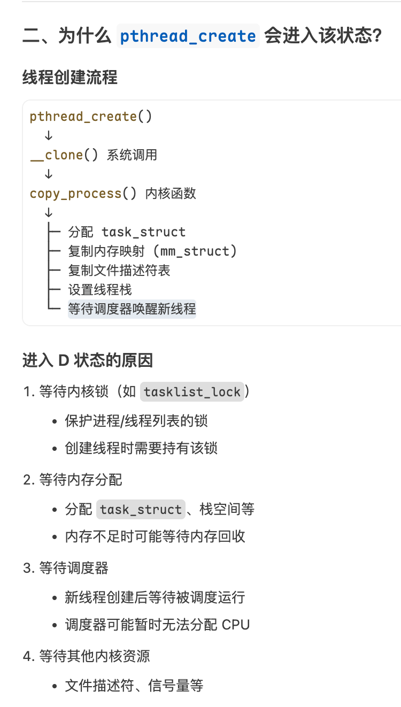

Perfetto中观察线程的状态变化可以知道线程（主线程20566）到底发生了什么，首先来看下Perfetto中线程状态调度问题。
- sleep案例一分析：
 可以看到该线程是被20672持有了锁，可以找到20672这个线程在该阶段做了什么。
可以看到该线程是被20672持有了锁，可以找到20672这个线程在该阶段做了什么。
 在20672线程中，也是被其它线程占用了锁，它是被20671线程持有了锁，而20671线程它在等待HandlerThread中的looper创建，所以它也会sleep。workHandler线程(20673)也就是刚HandlerThread中指定的线程名，而workHandler线程(20673)它是被20672持有了锁。
当线程发生了sleep时候，观察当前sleep线程后面的runnable状态，它表示当前线程即将被cpu调度。在runnable面板中可以看到Woken by (maybe interrupt)是被谁唤起的，可以直接点过去：
在20672线程中，也是被其它线程占用了锁，它是被20671线程持有了锁，而20671线程它在等待HandlerThread中的looper创建，所以它也会sleep。workHandler线程(20673)也就是刚HandlerThread中指定的线程名，而workHandler线程(20673)它是被20672持有了锁。
当线程发生了sleep时候，观察当前sleep线程后面的runnable状态，它表示当前线程即将被cpu调度。在runnable面板中可以看到Woken by (maybe interrupt)是被谁唤起的，可以直接点过去：
 从主线程（20566）的sleep状态的woken by信息中看到它是被workHnadler(20673)所唤醒的。经过上面的分析，最终是由于20671中创建了HandlerThread导致主线程sleep了4ms。
如果想通过各个状态连接来看的话，可以通过点击主线程20566的sleep状态详细面板中的
从主线程（20566）的sleep状态的woken by信息中看到它是被workHnadler(20673)所唤醒的。经过上面的分析，最终是由于20671中创建了HandlerThread导致主线程sleep了4ms。
如果想通过各个状态连接来看的话，可以通过点击主线程20566的sleep状态详细面板中的Critical path lite查看各个线程的运行连接情况。 - sleep案例二分析：
 这里有2ms的sleep状态，点击它后面的runnable状态能看到它是被谁唤醒的：
这里有2ms的sleep状态，点击它后面的runnable状态能看到它是被谁唤醒的：
 可以看到它是被ConnecttivityThr线程唤醒的，点击该线程能知道它在干什么，上面的3ms的sleep是因为线程一直在被HandlerThread给阻塞住了：
可以看到它是被ConnecttivityThr线程唤醒的，点击该线程能知道它在干什么，上面的3ms的sleep是因为线程一直在被HandlerThread给阻塞住了：
 在这段时间内，上层线程等待ConnectivityThread(HandlerThread)的Looper创建。所以在上面线程中sleep了2ms。
在这段时间内，上层线程等待ConnectivityThread(HandlerThread)的Looper创建。所以在上面线程中sleep了2ms。 - sleep案例三分析：
 这个线程在runnable状态的时候，是system_server进程中的binder线程唤醒的线程。点到对应的线程确实发现在binder reply调用：
这个线程在runnable状态的时候，是system_server进程中的binder线程唤醒的线程。点到对应的线程确实发现在binder reply调用：

 通过详细面板中的binder transaction能找到对应的client调用：
通过详细面板中的binder transaction能找到对应的client调用：
 通过btrace的slice也能观察到当前的transaction发生了什么：
通过btrace的slice也能观察到当前的transaction发生了什么：
 它是客户端网络监听的binder调用。
它是客户端网络监听的binder调用。 - sleep案例四分析：

 此处可以看到线程出现了大段的sleep了，是由于线程被CountDownLatch的await方法阻塞住了，点击线程的sleep状态后面的runnable看下是谁唤醒的，然后通过critical path lite能找到线程调用的顺序。
此处可以看到线程出现了大段的sleep了，是由于线程被CountDownLatch的await方法阻塞住了，点击线程的sleep状态后面的runnable看下是谁唤醒的，然后通过critical path lite能找到线程调用的顺序。 - Uninterruptible Sleep (non-IO)状态分析：
不可中断睡眠，但不是由I/O操作引起的。不可中断的意思是不可被信号（SIGKILL除外）唤醒，必须等待内核操作完成，保证内核数据一致性。常见在我们pthread_create方法会进入该状态：

为什么pthread_create会进入该状态？

可以看出来当调用pthread_create的线程会进入到内核态的阻塞。等待调度器唤醒新线程。